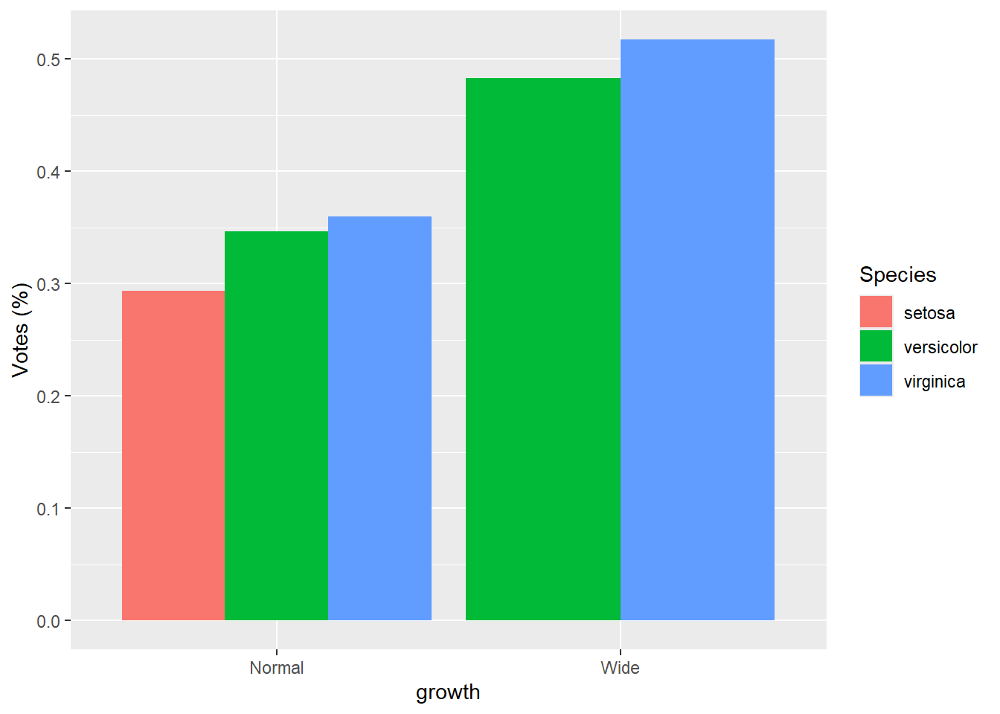
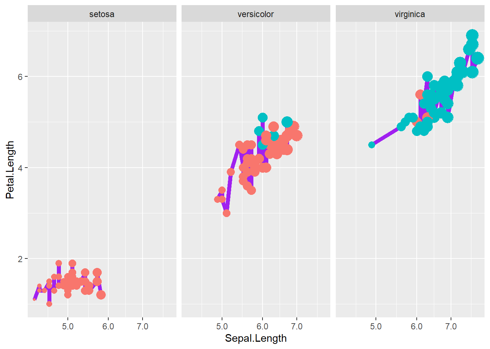
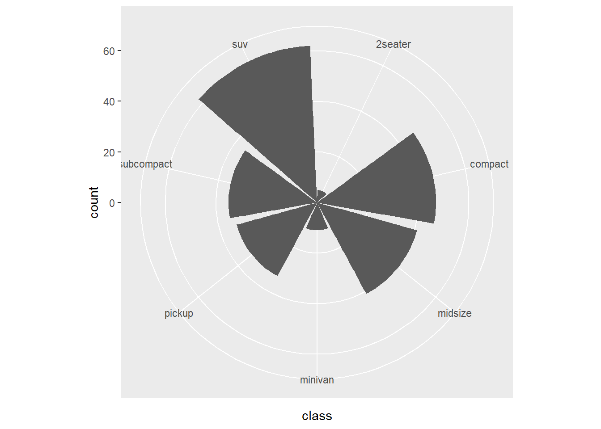
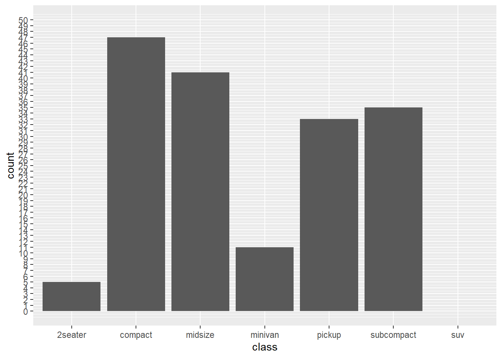
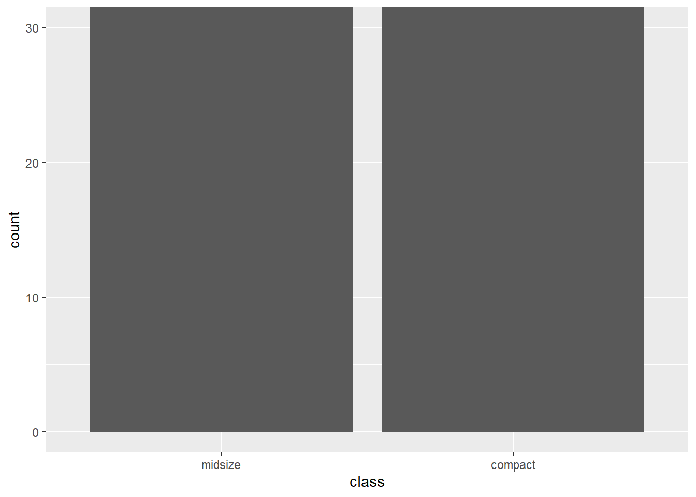
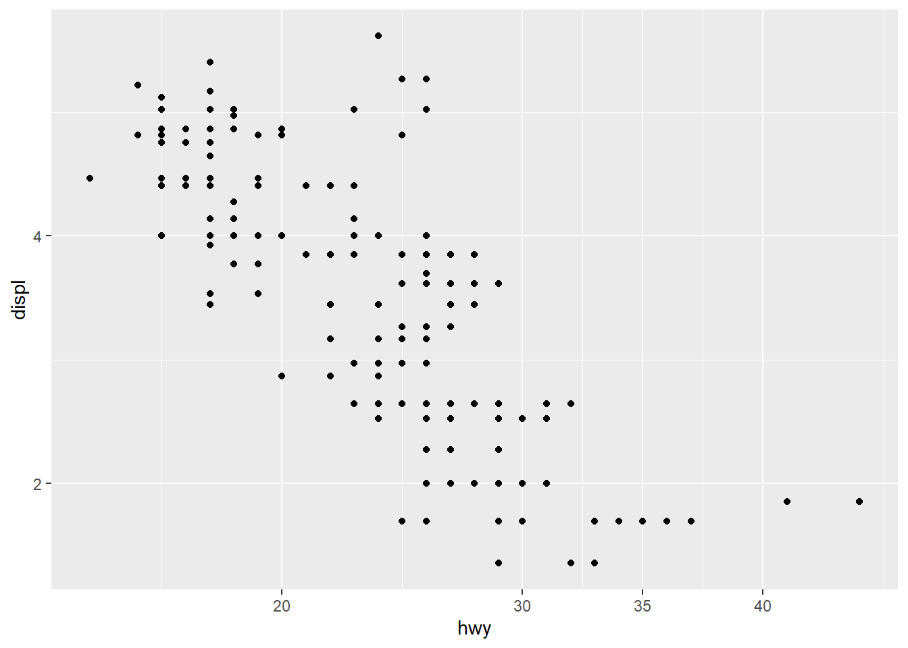

4 Data visualization
4.1 Data visualization introduction
4.1.1 Summarization
library(tidyverse)
library(dplyr)
mtcars %>%
mutate( kml = mpg * 0.42) %>%
group_by(cyl) %>%
summarise(avg_US = mean(mpg), avg_metric = mean(kml))## # A tibble: 3 × 3
## cyl avg_US avg_metric
## <dbl> <dbl> <dbl>
## 1 4 26.7 11.2
## 2 6 19.7 8.29
## 3 8 15.1 6.34mpg %>%
group_by(manufacturer, year) %>%
summarise_at(vars(cty, hwy), mean)## # A tibble: 30 × 4
## # Groups: manufacturer [15]
## manufacturer year cty hwy
## <chr> <int> <dbl> <dbl>
## 1 audi 1999 17.1 26.1
## 2 audi 2008 18.1 26.8
## 3 chevrolet 1999 15.1 21.6
## 4 chevrolet 2008 14.9 22.1
## 5 dodge 1999 13.4 18.4
## 6 dodge 2008 13.0 17.6
## 7 ford 1999 13.9 18.6
## 8 ford 2008 14.1 20.5
## 9 honda 1999 24.8 31.6
## 10 honda 2008 24 33.8
## # … with 20 more rows- change layout
mpg %>% count(class, year)%>%
spread(class, n) ## # A tibble: 2 × 8
## year `2seater` compact midsize minivan pickup subcompact suv
## <int> <int> <int> <int> <int> <int> <int> <int>
## 1 1999 2 25 20 6 16 19 29
## 2 2008 3 22 21 5 17 16 33- change all characters into factors
mpg <- mpg %>%
mutate_if(is.character, as.factor) #if a column is a character, change to a factor- wide to long data
mpg1 <- mpg %>%
gather("key", "value", cty, hwy)- convert wide data to long data using
pivot_longer
## Your code here. Naming choices for 1 and 2 are yours
dta <- mpg %>%
pivot_longer(cty:hwy, names_to = "var", values_to = "value") %>% # Both of those are
# value label
mutate(var = ifelse( var == 'cty', 'city','highway'))
ggplot(dta, aes(x = displ, y = value)) +
geom_point(aes(color = var)) +
geom_smooth(aes(color = var), se = F)## `geom_smooth()` using method = 'loess' and formula 'y ~ x'
- explore distribution
library(DataExplorer)
library(psych)##
## Attaching package: 'psych'## The following object is masked from 'package:Hmisc':
##
## describe## The following object is masked from 'package:plotrix':
##
## rescale## The following objects are masked from 'package:ggplot2':
##
## %+%, alphalibrary(naniar)##
## Attaching package: 'naniar'## The following object is masked from 'package:skimr':
##
## n_completeplot_histogram(riskfactors)
- explore relationship/correlation
library(psych)
pairs.panels(riskfactors[,1:10])
- create a individual theme
my_theme <- function(){
theme_bw() +
theme(axis.title = element_text(size=16),
axis.text = element_text(size=14),
text = element_text(size = 14))
}4.1.2 Explore missing values
# install.packages("naniar")
library(naniar)
# head(riskfactors)
riskfactors <- riskfactorsgg_miss_upset(riskfactors,nsets=10)
# install.packages("DataExplorer")
plot_missing(riskfactors)
# take a quick look at the data types of each column
visdat::vis_dat(riskfactors)
4.1.3 Add statistical test
library(ggpubr)
plt <- ggplot( data=mpg,
mapping= aes(x = as.factor(year),
y = cty,
color = as.factor(year) ) )+
geom_boxplot() +
geom_jitter(width=0.1)+
labs(x = 'Year',
y = "City mpg") +
my_theme()+ facet_wrap( ~ manufacturer,nrow = 2)
# add statistical test
my_comparisons <- list(c('1999','2008'))
plt + stat_compare_means() +
stat_compare_means(comparisons = my_comparisons)
4.1.4 Add texts to dots
USArrests <- USArrests %>% rownames_to_column('State')
ggplot(USArrests, aes(
x=UrbanPop,y=Murder))+
geom_point() +
labs(x = "Percent of population that is urban",
y = "Murder arrests (per 100,000)",
caption = "McNeil (1997). Interactive Data Analysis")+
geom_text(aes(label=State),size=3)
4.1.5 Set the legend
ggplot(iris, aes(x= Sepal.Length , fill= as.factor( Species)) ) + #whole plot's option
geom_histogram(aes(y=..density..),alpha=0.5, position="identity" , bins = 50)+
geom_density(aes(linetype=as.factor(Species)),alpha=.1 )+ #aesthetic's option
scale_fill_manual( name = "Groups",values = c("grey", "black", "skyblue"),labels = c("setosa", "versicolor" , "virginica" ))+
scale_linetype_manual( name = "Groups" ,values = c(1,3,5),labels = c("setosa", "versicolor" , "virginica") )+ # common legend
labs(x = "Sepal.Length",
y = "Density",
title = "") 
4.1.6 Create a panel of plots
- combine multiple plots into one
p1=ggplot(data=riskfactors,aes(x=age))+
geom_histogram(bins = 30 )
p2=ggplot(data=riskfactors,aes(x=sex))+
geom_bar (aes(x=sex) )
p3=ggplot(riskfactors,aes(x = education, y = bmi))+
geom_boxplot ( )
p4=ggplot(riskfactors, aes(x = marital )) +
geom_bar(aes(group = education, y = (..count..)/sum(..count..),fill = education)) +
scale_y_continuous(labels=scales::percent)
# install.packages("ggpubr")
library(ggpubr)
ggarrange(p1, p2, p3, p4, ncol = 2, nrow=2)
4.1.7 Plots in regression
- create linear regression model
data("Boston", package = "MASS")
linear_reg <- glm(medv ~ ., data=Boston , family = gaussian())
summary(linear_reg)##
## Call:
## glm(formula = medv ~ ., family = gaussian(), data = Boston)
##
## Deviance Residuals:
## Min 1Q Median 3Q Max
## -15.595 -2.730 -0.518 1.777 26.199
##
## Coefficients:
## Estimate Std. Error t value Pr(>|t|)
## (Intercept) 3.646e+01 5.103e+00 7.144 3.28e-12 ***
## crim -1.080e-01 3.286e-02 -3.287 0.001087 **
## zn 4.642e-02 1.373e-02 3.382 0.000778 ***
## indus 2.056e-02 6.150e-02 0.334 0.738288
## chas 2.687e+00 8.616e-01 3.118 0.001925 **
## nox -1.777e+01 3.820e+00 -4.651 4.25e-06 ***
## rm 3.810e+00 4.179e-01 9.116 < 2e-16 ***
## age 6.922e-04 1.321e-02 0.052 0.958229
## dis -1.476e+00 1.995e-01 -7.398 6.01e-13 ***
## rad 3.060e-01 6.635e-02 4.613 5.07e-06 ***
## tax -1.233e-02 3.760e-03 -3.280 0.001112 **
## ptratio -9.527e-01 1.308e-01 -7.283 1.31e-12 ***
## black 9.312e-03 2.686e-03 3.467 0.000573 ***
## lstat -5.248e-01 5.072e-02 -10.347 < 2e-16 ***
## ---
## Signif. codes: 0 '***' 0.001 '**' 0.01 '*' 0.05 '.' 0.1 ' ' 1
##
## (Dispersion parameter for gaussian family taken to be 22.51785)
##
## Null deviance: 42716 on 505 degrees of freedom
## Residual deviance: 11079 on 492 degrees of freedom
## AIC: 3027.6
##
## Number of Fisher Scoring iterations: 2- summary
knitr::kable(broom::tidy(linear_reg))| term | estimate | std.error | statistic | p.value |
|---|---|---|---|---|
| (Intercept) | 36.4594884 | 5.1034588 | 7.1440742 | 0.0000000 |
| crim | -0.1080114 | 0.0328650 | -3.2865169 | 0.0010868 |
| zn | 0.0464205 | 0.0137275 | 3.3815763 | 0.0007781 |
| indus | 0.0205586 | 0.0614957 | 0.3343100 | 0.7382881 |
| chas | 2.6867338 | 0.8615798 | 3.1183809 | 0.0019250 |
| nox | -17.7666112 | 3.8197437 | -4.6512574 | 0.0000042 |
| rm | 3.8098652 | 0.4179253 | 9.1161402 | 0.0000000 |
| age | 0.0006922 | 0.0132098 | 0.0524024 | 0.9582293 |
| dis | -1.4755668 | 0.1994547 | -7.3980036 | 0.0000000 |
| rad | 0.3060495 | 0.0663464 | 4.6128998 | 0.0000051 |
| tax | -0.0123346 | 0.0037605 | -3.2800091 | 0.0011116 |
| ptratio | -0.9527472 | 0.1308268 | -7.2825106 | 0.0000000 |
| black | 0.0093117 | 0.0026860 | 3.4667926 | 0.0005729 |
| lstat | -0.5247584 | 0.0507153 | -10.3471458 | 0.0000000 |
- create logistical regression
# load the Pima Indians dataset from the mlbench dataset
library(mlbench)
data(PimaIndiansDiabetes)
# rename dataset to have shorter name because lazy
diabetes <- PimaIndiansDiabetes
logistic_reg <- glm(diabetes ~ ., data=diabetes, family = binomial)
summary(logistic_reg)##
## Call:
## glm(formula = diabetes ~ ., family = binomial, data = diabetes)
##
## Deviance Residuals:
## Min 1Q Median 3Q Max
## -2.5566 -0.7274 -0.4159 0.7267 2.9297
##
## Coefficients:
## Estimate Std. Error z value Pr(>|z|)
## (Intercept) -8.4046964 0.7166359 -11.728 < 2e-16 ***
## pregnant 0.1231823 0.0320776 3.840 0.000123 ***
## glucose 0.0351637 0.0037087 9.481 < 2e-16 ***
## pressure -0.0132955 0.0052336 -2.540 0.011072 *
## triceps 0.0006190 0.0068994 0.090 0.928515
## insulin -0.0011917 0.0009012 -1.322 0.186065
## mass 0.0897010 0.0150876 5.945 2.76e-09 ***
## pedigree 0.9451797 0.2991475 3.160 0.001580 **
## age 0.0148690 0.0093348 1.593 0.111192
## ---
## Signif. codes: 0 '***' 0.001 '**' 0.01 '*' 0.05 '.' 0.1 ' ' 1
##
## (Dispersion parameter for binomial family taken to be 1)
##
## Null deviance: 993.48 on 767 degrees of freedom
## Residual deviance: 723.45 on 759 degrees of freedom
## AIC: 741.45
##
## Number of Fisher Scoring iterations: 5- summary
knitr::kable(broom::tidy(logistic_reg))| term | estimate | std.error | statistic | p.value |
|---|---|---|---|---|
| (Intercept) | -8.4046964 | 0.7166359 | -11.7279870 | 0.0000000 |
| pregnant | 0.1231823 | 0.0320776 | 3.8401403 | 0.0001230 |
| glucose | 0.0351637 | 0.0037087 | 9.4813935 | 0.0000000 |
| pressure | -0.0132955 | 0.0052336 | -2.5404160 | 0.0110721 |
| triceps | 0.0006190 | 0.0068994 | 0.0897131 | 0.9285152 |
| insulin | -0.0011917 | 0.0009012 | -1.3223094 | 0.1860652 |
| mass | 0.0897010 | 0.0150876 | 5.9453340 | 0.0000000 |
| pedigree | 0.9451797 | 0.2991475 | 3.1595780 | 0.0015800 |
| age | 0.0148690 | 0.0093348 | 1.5928584 | 0.1111920 |
4.1.7.1 Create forest plots for coefficients or OR
library(sjPlot)## Registered S3 methods overwritten by 'effectsize':
## method from
## standardize.Surv datawizard
## standardize.bcplm datawizard
## standardize.clm2 datawizard
## standardize.default datawizard
## standardize.mediate datawizard
## standardize.wbgee datawizard
## standardize.wbm datawizard## #refugeeswelcomeplot_model(linear_reg, show.values = TRUE, value.offset = 0.5)
plot_model(logistic_reg, show.values = TRUE, value.offset = .5, vline.color = "black") another way
another way
library(finalfit)
explanatory = c( "crim" , "zn" , "indus" , "nox" , "rm" , "age" , "dis" , "rad" , "tax" ,"ptratio" ,"black" , "lstat" )
dependent = "medv"
Boston %>%
coefficient_plot(dependent, explanatory, table_text_size=3,
title_text_size=12,
plot_opts=list(xlab("Beta, 95% CI"),
theme(axis.title = element_text(size=12))))
library(finalfit)
explanatory = c( "pregnant", "glucose" , "pressure", "triceps" ,"insulin" , "mass" , "pedigree", "age" )
dependent = "diabetes"
diabetes %>%
or_plot(dependent, explanatory, table_text_size=3,
title_text_size=12,
plot_opts=list(xlab("OR, 95% CI"),
theme(axis.title = element_text(size=12))))## Waiting for profiling to be done...
## Waiting for profiling to be done...
## Waiting for profiling to be done...
- qq plot
ggqqplot( (Boston$medv))
- Loading data set
library(printr)## Registered S3 method overwritten by 'printr':
## method from
## knit_print.data.frame rmarkdownlibrary(tidyverse)
head(iris)| Sepal.Length | Sepal.Width | Petal.Length | Petal.Width | Species |
|---|---|---|---|---|
| 5.1 | 3.5 | 1.4 | 0.2 | setosa |
| 4.9 | 3.0 | 1.4 | 0.2 | setosa |
| 4.7 | 3.2 | 1.3 | 0.2 | setosa |
| 4.6 | 3.1 | 1.5 | 0.2 | setosa |
| 5.0 | 3.6 | 1.4 | 0.2 | setosa |
| 5.4 | 3.9 | 1.7 | 0.4 | setosa |
4.2 Scatter plot
4.2.1 Create a empty canvas
- then create
aesthetic mapping
- tell the function which dataset and variables to use
ggplot(data = iris, # which data set? canvas?
aes(x=Sepal.Length , y=Petal.Length )) # which variables as aesthetics? x and y are mapped to columns of the data; different geoms can have different aesthetics (different variables). 
4.2.2 Add a layer/geom of points to the canvas
ggplot(data = iris,
mapping = aes(x=Sepal.Length , y=Petal.Length )) +
geom_point() # adding the geometrical representation 
# same plot as above
ggplot(data = iris) +
geom_point( aes(x=Sepal.Length , y=Petal.Length )) 4.2.3 Add another aesthetic
- add a curve/straight line to fit these points
- geom provides the aesthetic to ggplot
# Loess curve
ggplot(data = iris,
mapping = aes(x=Sepal.Length , y=Petal.Length )) +
geom_point() +
geom_smooth() ## `geom_smooth()` using method = 'loess' and formula 'y ~ x'
# Linear regression line
ggplot(data = iris,
mapping = aes(x=Sepal.Length , y=Petal.Length)) +
geom_point() +
geom_smooth(method = "lm")## `geom_smooth()` using formula 'y ~ x'
4.2.4 Add other aesthetic
- set other aesthetics
colour, alpha (transparency), and size of points
ggplot(data = iris) +
geom_point(aes(x=Sepal.Length , y=Petal.Length, size = Sepal.Width ),
alpha = .5,
colour = "red")
ggplot(data = iris) +
geom_point(aes(x=Sepal.Length , y=Petal.Length, size = Sepal.Width , colour=Species), #white is a variable here
alpha=.9)
- categorize
Petal.Widththen map colour to this new variable
iris <- iris %>%
mutate(growth = ifelse(Petal.Width > 1.5, "Wide", "Normal"))
ggplot(data=iris) +
geom_point(aes(x=Sepal.Length , y=Petal.Length, size = Sepal.Width , colour=growth),
alpha=.9)
4.3 Bar chart
ggplot(data = iris) +
geom_bar(aes(x = growth))
- bar chart after
group_by - then use
stat='identity'
library(dplyr)
results <- iris %>%
group_by(Species, growth) %>%
summarise(Sepal.Length.mean=mean (Sepal.Length ))## `summarise()` has grouped output by 'Species'. You can override using the
## `.groups` argument. gop <- results %>%
filter(Species != "setosa_null" )
gop## # A tibble: 5 × 3
## # Groups: Species [3]
## Species growth Sepal.Length.mean
## <fct> <chr> <dbl>
## 1 setosa Normal 5.01
## 2 versicolor Normal 5.91
## 3 versicolor Wide 6.18
## 4 virginica Normal 6.13
## 5 virginica Wide 6.62- though meaningless below until line chart (just use the mean as the sum for demonstration)
# We can also store parts of a plot in an object
plot1 <- ggplot(gop) +
geom_bar(aes(x=growth , y=Sepal.Length.mean),
stat='identity')
plot1 ### Add some options for the whole ggplot rather than layers
-
### Add some options for the whole ggplot rather than layers
- switch the x and y axes
plot1 +
coord_flip()
reorderx categories (-means descending)
ggplot( gop) +
geom_bar(aes(x=reorder(growth, -Sepal.Length.mean), y=Sepal.Length.mean, fill=growth),
stat='identity') +
coord_flip()
- add x axis
labeland atheme
ggplot(gop) +
geom_bar(aes(x=reorder(growth, -Sepal.Length.mean), y=Sepal.Length.mean, fill=growth),
stat='identity') +
coord_flip() +
xlab("Growth categories") +
guides(fill=F) +
theme_minimal()
- set theme
library(ggthemes)
ggplot(data = iris) +
geom_bar(aes(x = growth)) +
theme_economist()
4.3.1 Grouped bar chart
-bar chart with different panels
ggplot(mpg, aes(x = class)) +
geom_bar() +
facet_wrap( ~ year)
- actual number (groups are stacked by default)
ggplot(gop) +
geom_bar(aes(x=growth, y=Sepal.Length.mean, fill=Species)
, stat='identity'
)
ggplot(mpg, aes(x = class )) +
geom_bar(aes(group = year, fill = year), position = "stack")
- percentage
ggplot(gop) +
geom_bar(aes(x=growth, y=Sepal.Length.mean, fill=Species),
stat='identity',
position='fill')
- groups are dodge with
actual number
ggplot(gop) +
geom_bar(aes(x=growth, y=Sepal.Length.mean, fill=Species),
stat='identity',
position='dodge')
- groups are dodge with percentage
gop2 <- gop %>%
group_by(growth ) %>%
mutate(Sepal.Length.prop=Sepal.Length.mean/sum(Sepal.Length.mean))
ggplot(gop2) +
geom_bar(aes(x=growth, y=Sepal.Length.prop, fill=Species),
stat='identity',
position='dodge') +
ylab("Votes (%)")
4.4 Line charts
ggplot(iris) +
geom_line(aes(x=Sepal.Length , y=Petal.Length))
4.4.1 Grouped by colour variable
ggplot(iris) +
geom_line(aes(x=Sepal.Length , y=Petal.Length, colour = Species))
- grouped by state then set how many rows or columns
ggplot(iris) +
geom_line(aes(x=Sepal.Length , y=Petal.Length) ) +
facet_wrap(~Species, nrow = 1) + #set how many rows
coord_flip() 
4.4.2 Multiple aesthetics
iris <- iris %>%
mutate(growth = ifelse(Petal.Width > 1.5, "Wide", "Normal"))
ggplot(iris, aes(x = Sepal.Length, y = Petal.Length)) +
geom_line(size=2,color="purple")+
# number format
scale_x_log10(labels = scales::label_number())+
geom_point( aes(size = Sepal.Length,colour = as.factor(growth)),show.legend = F)+
facet_wrap(~ Species) 